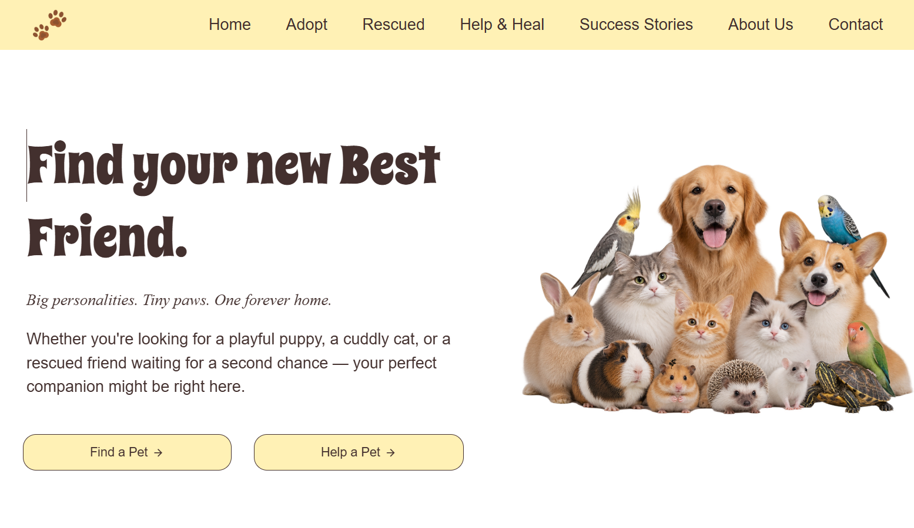
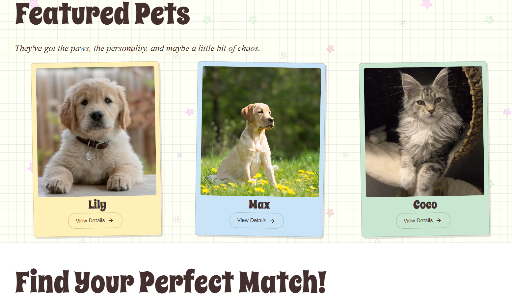
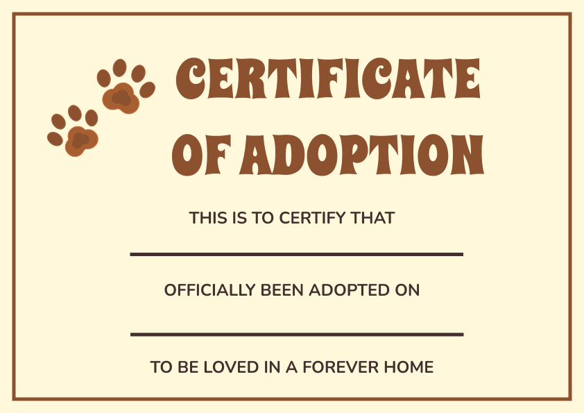

Pet Adoption Platform A user-friendly platform connecting rescued pets with loving homes. Users can explore available pets, learn their stories, discover the adoption process, and schedule meet-and-greet appointments. The platform also promotes animal welfare through donation opportunities.
Designed and developed the website, worked on the user interface, and implemented the project functionality.

